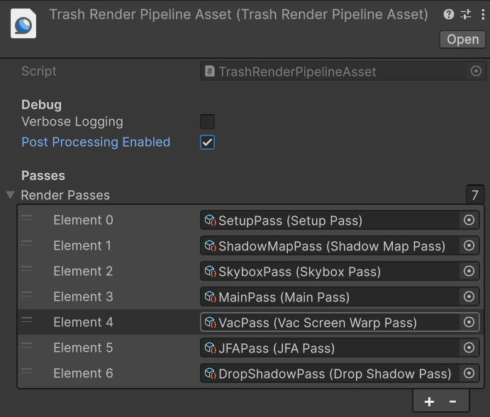
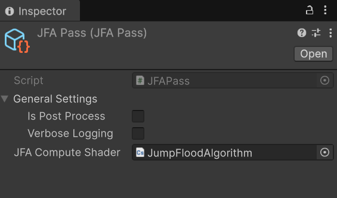
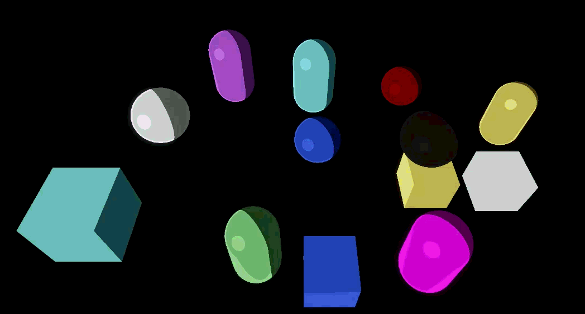
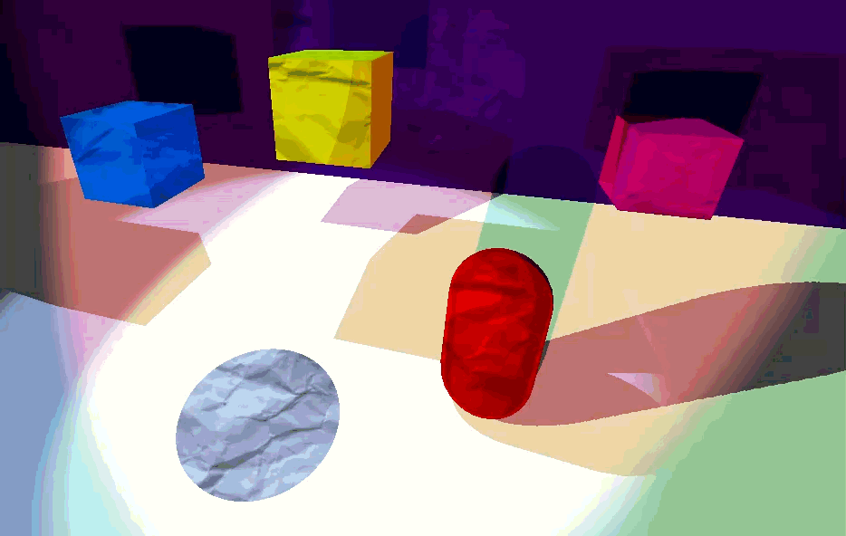
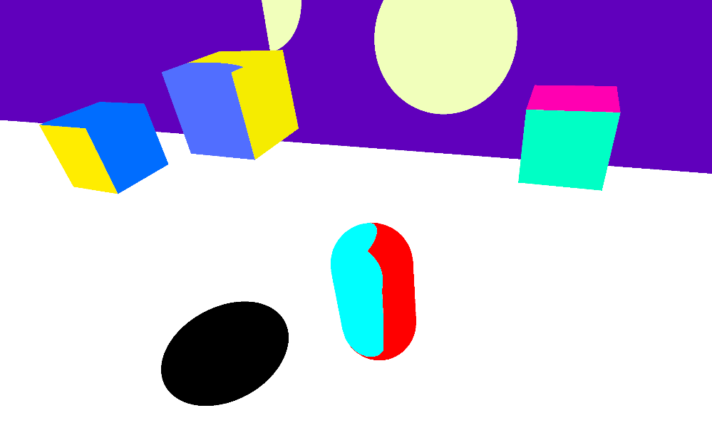
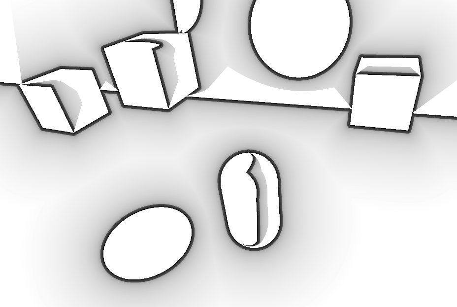

Papercraft Unity Render Pipeline
A lightweight custom render pipeline for Unity focused on a papercraft diorama art style.
Overview
This Render Pipeline was developed as part of a collaborative demo project for a game about collecting trash. The main mechanic of the game is what inspired the rendering style. The idea was to have each frame look somewhat like a photo of a papercraft diorama, with visible texture and shadow.
The decision to create a full custom render pipeline rather than using unity's URP led to several unique challenges, but ultimately allowed for a lighter weight rendering solution focused solely on the effects needed for the Papercraft style, including custom shadow textures, drop shadows between objects, and paper texture overlays.
References
The art style for this project was inspired by the below rendering projects on YouTube, in particulal the use of custom shadow textures from Useless Game Dev.
The main technical reference for the technical implementation of the render pipeline was Jasper Flick's Catlike Coding Custom SRP, in I found his implementations for shadow mapping and getting renderer lists very helpful.
Pipeline Implementation
One of the main goals for the render pipeline was to create something scalable, lightweight, and easily configurable. These design goals led to my implementation having three distinct parts: the Render Pipeline Asset, the Render Pipeline Instance, and a list of individually configurable Render Passes. This 3-part approach is fairly standard for custom render pipelines in Unity due to the underlying RenderGraph API. The RenderGraph defines certain things about the passes it expects so that it can automatically handle transient resources and syncronization.
Render Pipeline Asset
The simplest of the 3 main parts of a typical unity SRP is the Pipeline Asset, it is main unity asset that handles high level configuration for the entire renderer pipeline. This includes general settings and the list of render passes that should be executed each frame. The Pipeline Asset mainly exists to wrap the Pipeline Instance, to allow for multiple pipelines to be created with different settings and pass lists for debugging or to be used for diffenret styles in different scenes or platforms.
public class TrashRenderPipelineAsset : RenderPipelineAsset<TrashRenderPipelineInstance> { [Header("Debug")] public bool VerboseLogging; public bool PostProcessingEnabled; [Header("Passes")] [SerializeReference] public List<ITrashRenderPass> RenderPasses; protected override RenderPipeline CreatePipeline() { TrashRenderPipelineInstance instance = new TrashRenderPipelineInstance(this); foreach (ITrashRenderPass pass in RenderPasses) instance.AddRenderPass(pass); return instance; } }
Render pipeline asset responsible for holding settings and initializing pipeline instance.

Render Pipeline Configuration
An example of a configured pipeline asset with passes for stylized Papercraft rendering.
Render Pipeline Instance
In my implementation, the Render Pipeline Instance's main role is holding on to all of the information that passes would need frame-to-frame and making it easily avaiable to passes when they execute. This information includes the main "RendererList", which includes all of the geometry that needs to be rendered after camera frustum culling, handles to all of the render targets we intend to use, and some other miscellaneous setup info.
private void SetUpRendererLists(ScriptableRenderContext context) { //Only one light mode tag for everything for now ShaderTagId shaderTagId = new ShaderTagId("LightModeAll"); //Set up settings for drawing all of the geometry in the scene //with the simple built-in sorting and no filtering var sortingSettings = new SortingSettings(currentCamera); DrawingSettings drawingSettings = new DrawingSettings(shaderTagId, sortingSettings); FilteringSettings filteringSettings = new FilteringSettings(RenderQueueRange.all); // UI + unlit objects var uiTag = new ShaderTagId("UI_Unlit"); drawingSettings.SetShaderPassName(1, uiTag); //let unity do camera culling. currentCamera.TryGetCullingParameters(out var cullingParameters); cullingParameters.shadowDistance = _PipelineAsset.shadowDistance; cullingResults = context.Cull(ref cullingParameters); //get the final list of all RendererListParams param = new RendererListParams(cullingResults, drawingSettings, filteringSettings); rendererListAllGeometry = context.CreateRendererList(ref param); }
Render pipeline asset responsible for holding settings and initializing pipeline instance.
I only ended up needing one rendererlist for this project, so all of my shaders use the same "LightModeAll" tag and are drawn together.
However, here in the RenderPipeline instance is where you could also set up several renderer lists with different light mode tags in order to give the render passes more granular control over how to draw different objects and when.
Render Passes
The render passes are where actual draw calls happen, in my implementation they are objects with 2 primary functions, "Request", and "Execute". "Request" is where the pass specifies what resources it will access, and store any information it needs for the execution phase in a generic data container that gets managed by the Pipeline Instance/RenderGraph. "Execute" is where the pass accesses the resources it specified to do the gpu work is was designed to do via a unity GraphContext, again managed by the Pipeline Instance/RenderGraph.
My version of render passes are created as ScriptableObjects for easier configuration and reuse. Any to non-geomtry data they need, i.e. compute shaders, full screen materials, etc, can be created as fields and assigned in editor.

Render Pass Configuration
An example of a configured render pass for computing a vornoi distance field via the Jump Flood Algorithm.
[CreateAssetMenu(fileName = "GeometryPass", menuName = "TrashPasses/GeometryPass")] public class GeometryPass : TrashRasterPass<GeometryPass.GeometryPassData> { public override bool IsPostProcessPass => false; public class GeometryPassData : PassData { public RendererList rendererList; public TrashRenderPipelineInstance.ShadowInfo[] shadowInfos; } public override void RequestData( RenderGraph renderGraph, GeometryPassData data, TrashRenderPipelineInstance instance, IRasterRenderGraphBuilder builder) { //settings builder.AllowPassCulling(false); builder.AllowGlobalStateModification(true); data.rendererList = instance.rendererListAllGeometry; data.shadowInfos = instance.shadowInfos; //render to scene texture and stencil buffer builder.SetRenderAttachment(instance.SceneTexHandle, 0, AccessFlags.Write); builder.SetRenderAttachment(instance.StencilBufferHandle, 1, AccessFlags.Write); //read from shadow maps rendered in previous passs builder.UseTexture(instance.shadowMapArrayHandle, AccessFlags.Read); } public override void Execute(GeometryPassData data, RasterGraphContext RGcontext) { RasterCommandBuffer cmd = RGcontext.cmd; cmd.SetViewProjectionMatrices(data.camera.worldToCameraMatrix, data.camera.projectionMatrix); cmd.DrawRendererList(data.rendererList); } }
Render pipeline asset responsible for holding settings and initializing pipeline instance.
Stylization
The visual style for this project's renderer comes from 4 main features it implements: cel shading, screenspace texturing, custom shadow texturing, and drop shadows between regions.
Cel shading
float4 ToonBlinnPhong(float3 V, float3 l, float3 surfaceNormal, float4 lightColor, float glossiness) { //step to create the cel shading cutoff float nDotL = dot(normalize(l), surfaceNormal); nDotL = step(0, nDotL); float3 halfVector = normalize(l + V); float nDotH = dot(surfaceNormal, halfVector); //step to create the cel shading cutoff for the specular highlight float specular = pow(max(nDotH, 0.0), glossiness); specular = step(0.99, specular); float nDotV = dot(V, surfaceNormal); float rimPower = step(0.7, (1 - nDotV) * nDotL); float totalPower = nDotL + specular + rimPower; //Store whether or not there was specular highlighting in the alpha return float4(lightColor.rgb * totalPower, specular); }
Blinn-Phong lighting model with cel shading cutoffs

Cel Shading
Creating cutoffs instead of gradients with lighting does a lot of heavy lifting in achieving a cartoon-like appearance.
Screenspace texturing
outputFrag frag (Varyings IN) { //get the uv of the current pixel in screen space //from builtin unity uniforms float2 screenUV = IN.screenPos.xy / IN.screenPos.w; //Simple UV animation moving the sample around //abruptly every few seconds for a choppy effect float choppedTime = frac(_Time.y + _ChopOffset) * _ChopSpeed / 2.0; choppedTime = floor(choppedTime) / _ChopSpeed; IN.uv += choppedTime; float2 screenUVoffset = float2(5 * choppedTime, 7 * choppedTime); screenUV += screenUVoffset; //Toggle between using screen-space UVs and regular UVs for texture sampling //useful for debugging issues with shadow UVs or screen-space effects float2 fragUV = _ScreenSpaceSampling ? screenUV : IN.uv; //Use our animated screen space UVs whenever sampling textures. albedo = SAMPLE_TEXTURE2D(_MainTex, sampler_MainTex, fragUV * _MainTex_ST.xy + _MainTex_ST.zw).rgb; //Rest of Fragment Shader... }
JFA Pass incrementally filling in each pixel's closest seed (stencil edge)
In a papercraft diorama, all of the pieces of paper, cardboard, etc, are going to be fairly close to the camera and their texture would be visible. They wouldn't look look quite like 3d objects each with their own interactions with light, but rather like flat cutouts of paper stacked together. By sampling textures in screen space instead of the regular UV space, we can make everything look a fair bit flatter.

Final Result
The final image rendered with the Drop shadow effect
Shadow Texturing
My render pipeline a custom shadow mapping implementation that allows for stylized shadows. Determining when a fragment in in shadow is done the conventional way, by rending the scene from the perspective of the light source and writing depth to a texture, then comparing this depth to the shadow depth of the fragment in the main pass. During this process it also samples from a custom texture that allows the shadows to have a stylized appearance per object.
vert2frag vert (Attributes IN) { //... //calculate clip space positions for all lights for (int i = 0; i < MAX_LIGHTS; i++) { float4 shadowViewPos = mul(_ShadowView[i], float4(output.worldPos, 1)); output.shadowClipPos[i] = mul(_ShadowProj[i], shadowViewPos); } //... } outputFrag frag (Varyings IN) { //... [unroll(MAX_LIGHTS)] for (int i = 0; i < MAX_LIGHTS; i++) { if (_TrashLightBuffer[i].type == NO_LIGHT) // No light continue; //get whether this fragment is in shadow for the current light float shadow = GetShadowValue(IN.shadowClipPos[i], i, (fragUV * _MainTex_ST.xy + _MainTex_ST.zw), _TrashLightBuffer[i].bias); //skip negative, they indicate unused lights/shadow maps if (shadow < 0.0) continue; //get cel shaded lighting value for this light float4 lightingColor = ToonShading(i, IN.normalWS, IN.worldPos, _WorldSpaceCamPos, _Glossiness); float shadowTexSample = SAMPLE_TEXTURE2D(_ShadowTex, sampler_ShadowTex, fragUV * _ShadowTex_ST.xy + _ShadowTex_ST.zw).r; //only darken the pixel if its in shadow and the texture says so shadow = max(shadow, shadowTexSample); //binarize for sharper edges shadow = step(0.5, shadow); //apply stylized shadow and light lightingColor *= shadow; finalColor += lightingColor; } //... }
JFA Pass incrementally filling in each pixel's closest seed (stencil edge)
float GetShadowValue(float4 shadowClipPos, int lightIndex, float2 uv, float bias) { float3 shadowNDC = shadowClipPos.xyz / shadowClipPos.w; float2 shadowUV = shadowNDC.xy * 0.5 + 0.5; shadowUV.y = 1.0 - shadowUV.y; if (shadowUV.x < 0 || shadowUV.x > 1 || shadowUV.y < 0 || shadowUV.y > 1) return -1.0; // Outside shadow map bounds if (shadowNDC.z < 0.0 || shadowNDC.z > 1.0) return -1.0; float currentDepth = shadowNDC.z; //make sure z is the right way around #if UNITY_REVERSED_Z float biasedDepth = currentDepth + bias; #else float biasedDepth = currentDepth - bias; #endif shadow = SAMPLE_TEXTURE2D_ARRAY_SHADOW(_ShadowMaps, sampler_linear_clamp_compare, float3(shadowUV, biasedDepth), lightIndex); return shadow; }
JFA Pass incrementally filling in each pixel's closest seed (stencil edge)

Final Result
The final image rendered with the Drop shadow effect
Drop Shadows
Sampling textures in screen space instead of UV space helps make the scene look more like stacked pieces of flat papaer, but it lacks some depth cues that would help to differentiate between the layers. By adding drop shadows between the layers, we can add some add these depth cues and make the scene a lot easier to read.
The first step in rendering drop shadows is determining where the edges of the objects we want to put them around are, for this I used a stencil buffer, which I set up to render during the main geometry pass. Note how each object is a distict stencil value, as well as it's specular highlight getting its own stencil value. I did this so taht I could put drop shadows around the hypothetical piece of paper making up the specular highlight to help it stand out more.
static const float4 BAD_SEED = float4(-1, -1, -1, -1); static const int2 NEIGHBOR_OFFSETS[8] = { int2(-1, -1), int2(0, -1), int2(1, -1), int2(-1, 0), int2(1, 0), int2(-1, 1), int2(0, 1), int2(1, 1), }; bool IsOnStencilEdge(uint2 coord) { uint center = _StencilBuffer[coord].r; //loop thru neighors //if any neighor has a different stencil value then this is an edge for (int i = 0; i < 8; i++) { int2 neighborCoord = int2(coord) + NEIGHBOR_OFFSETS[i]; if (neighborCoord.x < 0 || neighborCoord.y < 0 || neighborCoord.x >= _TextureSize.x || neighborCoord.y >= _TextureSize.y) continue; uint neighborValue = _StencilBuffer[uint2(neighborCoord)].r; if (neighborValue > center) return true; } return false; } [numthreads(8,8,1)] void Seed(uint3 id : SV_DispatchThreadID) { if (any(id.xy >= (uint2)_TextureSize)) return; _SeedWrite[id.xy] = IsOnStencilEdge(id.xy) ? float4(id.xy, 0, 1) : BAD_SEED; }
JFA seeding based on stencil edges
Once we have this seeded texture, we can do passes of the algorithm starting with a step size of half of the texture size and halving it each time. The JFA is super efficient for this purpose because we only need to do log(n) passes, the early ones quickly propogate which seeds are generally closest to which areass and the later ones fine tune the results.
[numthreads(8, 8, 1)] void DistancePass(uint3 id : SV_DispatchThreadID) { if (any(id.xy >= (uint2)_TextureSize)) return; //get distance between this pixel and its seed float4 seed = _SeedRead[id.xy]; float dist = distance(float2(id.xy), seed.xy); //adjust the distacne for sharper falloff near edge, //better for drop shadows float adjustedDistance = dist / 1000; if (adjustedDistance < 0.02) adjustedDistance = 4 * adjustedDistance; else adjustedDistance = sqrt(sqrt(adjustedDistance - 0.02)) + 0.15; adjustedDistance = saturate(adjustedDistance); float output = IsValidSeed(seed) ? adjustedDistance : 0.0; //don't put drop shadow on pixels that are above us in the diorama uint selfStencilVal = _StencilBuffer[id.xy].r; uint seedStencilVal = _StencilBuffer[uint2(seed.xy)].r; if (selfStencilVal == seedStencilVal) output = 1.0f; _DistanceOutput[id.xy] = output; }
JFA Distance field output adjusted for sharper shadow falloffs

Stencil Buffer Visualization
Stencil buffer rendering happens alongside the main rendering pass into a seperate texture.
The edges of this stenil buffer are what we use to seed our JFA, this seeding process creates a texture where each pixel's values is it's own position if it's an edge, or a known other value if it is not.
[numthreads(8,8,1)] void JFAPass(uint3 id : SV_DispatchThreadID) { if (any(id.xy >= (uint2)_TextureSize)) return; float4 bestSeed = _SeedRead[id.xy]; float bestDist = IsValidSeed(bestSeed) ? distance(float2(id.xy), bestSeed.xy) : 1e38; //for each pixel step size away in each direction [unroll] for (int i = 0; i < 8; i++) { //sample the seed texture at that location int2 sampleCoord = (int2)id.xy + NEIGHBOR_OFFSETS[i] * _StepSize; sampleCoord = clamp(sampleCoord, int2(0, 0), _TextureSize - 1); float4 candidate = _SeedRead[sampleCoord]; //we dont care about it if it hasnt found a seed yets if (!IsValidSeed(candidate)) continue; //if it's better than the our current best, update our best float d = distance(float2(id.xy), candidate.xy); if (d < bestDist) { bestDist = d; bestSeed = candidate; } } _SeedWrite[id.xy] = bestSeed; }
JFA Pass incrementally filling in each pixel's closest seed (stencil edge)
After running the JFA passes, we can get the distance from each pixel to the nearest edge its pointing to, adjust this value to have a sharper falloff near the edges, and we have our final drop shadow mask that we, we can composite with our scene texture to get the final result.

JFA Result
My JFA gives us a Vornoi map adjusted to have a harder edge near the boundaries to make for better shadows
Final Result
The final image rendered with the Drop shadow effect